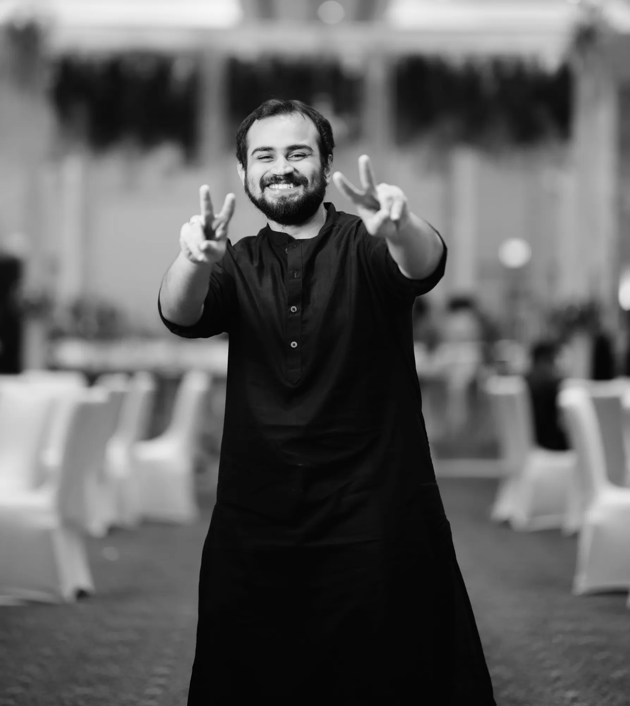

INDEPENDENT FILMMAKER · INDIA
Stories toldthrough movingimages.
Cinematographer / Video Editor / AI Filmmaker
A WAY OF SEEING
SELECTED DISCIPLINES
Selected work.

BEYOND THE FRAME
Every frame
has a purpose.
From intimate wedding stories to ambitious visual experiments, the work begins with curiosity and ends with a considered edit.
EXPLORE THE WORK ↗
A LITTLE ABOUT ME
Filmmaker.
Editor.
Visual storyteller.
I’m Sourav Chakraborty, an independent filmmaker, cinematographer, video editor and AI filmmaker from India. I work across weddings, commercial films, AI-generated cinema and photography.
My process moves between observation and experimentation — finding the right image, shaping its rhythm, and carrying the idea through to the final frame. I enjoy working across the full visual process, from cinematography and editing to emerging generative workflows.
LET’S CONNECT ↓PRACTICE & TOOLS
Direction & cinematography
Visual planning, camera, lighting and on-set storytelling.
Editing & post-production
DaVinci Resolve · Adobe Premiere Pro · After Effects
AI filmmaking
ComfyUI · Runway · Veo · Seedance · MiniMax · Higgsfield
Photography
Personal projects, portraits and documentary-minded visual studies.
HAVE A PROJECT IN MIND?
Have a story
worth telling?
Tell me a little about it. Let’s make something meaningful.